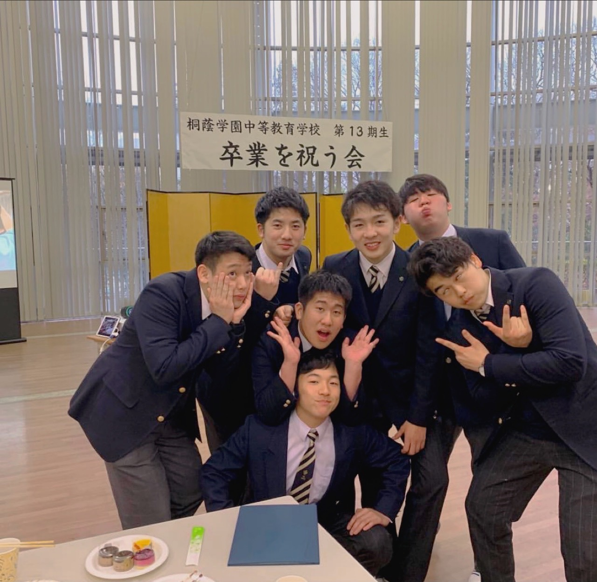
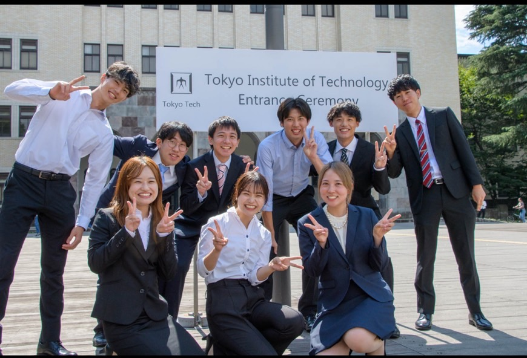

|
Mizuki Kojima I am a first-year master's student at Tokyo Institute of Technology. In Kawakami Lab, I study computer vision. I earned my bachelor's degree under Associate Professor Rei Kawakami. |
{kind=link}
Education |
|


|
Toin Gakuen
From elementary to high school I attended Toin Gakuen for 12 years, from elementary through high school. I was in the top class based on academic performance ( in the top 30 out of 1000 students). |

|
Tetsuryokukai
Cram School I was a member of Tetsuryokukai, the most prestigious tutoring school in Japan, for four years during my middle and high school years. In mathematics, I was within the top 10%. |

|
Tokyo Institute of Technology
School of Engineering, Department of Systems and Control Engineering Undergraduate Skipping ahead in a program that normally takes 4 years, I graduated in 3.5 years. I obtained my bachelor's degree from Tokyo Institute of Technology (Japan's third-ranked university). My overall GPA was 3.64 out of 4.5, and in my major subjects, I achieved a GPA of 3.92 out of 4.5. Furthermore, as the leader of my department for one academic year, I contributed to university affairs. For my thesis, I conducted research on NeRF under Few-shot conditions. |
|

|
Tokyo Institute of Technology
School of Engineering, Department of Systems and Control Engineering Graduate I am currently a first-year master's student at Tokyo Institute of Technology (Japan's third-ranked university). My overall GPA is 3.96 out of 4.5, and in my major subjects, it is 3.89 out of 4.5. My research continues to focus on estimating NeRF from a small number of closely spaced images. |
ResearchI am interested in computer vision, generative AI, geometry, and probability statistics. I am particularly keen on blending theory with practical applications. Through growth, I strongly aspire to contribute to society. |

|
Few-shot View Synthesis Based on Geometric and Semantic Consistency
Mizuki Kojima, Rei Kawakami, Masatoshi Okutomi arXiv, 2024 Using semantic and geometric consistency from three closely captured images, we enable image generation from any viewpoint. |
Intern |
|
I am borrowing the format of Jon Barron's homepage. |